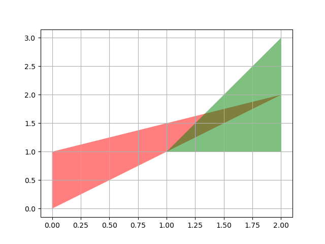
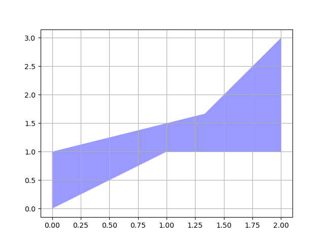
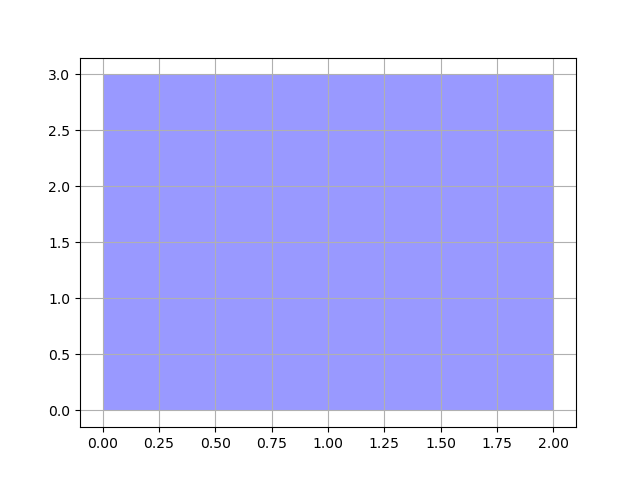

聚合¶
空间数据处理领域对聚合操作有广泛的需求。Arctern 暂时仅支持两种聚合方法，即 unary_union 和 envelope_aggr。这两个聚合函数的功能如下：
unary_union: 返回一个代表一组几何体的并集的几何体。
envelope_aggr: 计算包含一组几何体的最小矩形边界范围，且该矩形的边与坐标轴平行。
本文档将介绍如何使用 Arctern GeoSeries 的聚合方法。
生成测试数据¶
创建一个 GeoSeries 对象，其中包含两个多边形（POLYGON）：
>>> from arctern import GeoSeries
>>> polygon_s = GeoSeries(["POLYGON ((0 0,0 1,1.5 2,0 0))", "POLYGON ((1 1,2 1,2 3,1 1))"])
polygon_s 中的两个几何体如下图所示：

测试¶
获取一组几何体的并集¶
选取 polygon_s 的所有元素，并使用 unary_union 方法得出它们的并集：
>>> polygon_s[[0,1]].unary_union()
0 MULTIPOLYGON (((0 0,0 1,1 1,0 0)),((1 1,2 3,2 1,1 1)))
dtype: GeoDtype
聚合结果如下图所示：

获取一组几何体的最小矩形边界¶
选取 polygon_s 的所有元素，并使用 envelope_aggr 方法得出它们的最小矩形边界：
>>> geos[[0,2]].envelope_aggr()
0 POLYGON ((0 0,0 3,2 3,2 0,0 0))
dtype: GeoDtype
聚合结果如下图所示：
